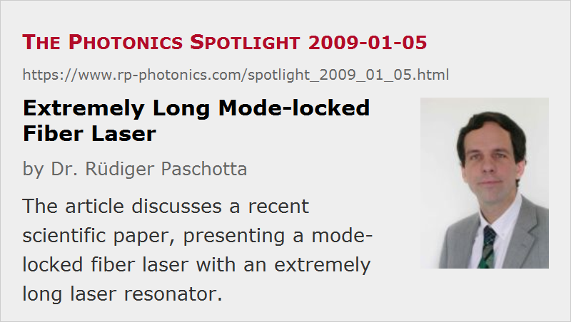

Extremely Long Mode-locked Fiber Laser
Posted on 2009-01-05 as a part of the Photonics Spotlight (available as e-mail newsletter!)
Permanent link: https://www.rp-photonics.com/spotlight_2009_01_05.html
Author: Dr. Rüdiger Paschotta, RP Photonics Consulting GmbH
Abstract: The article discusses a recent scientific paper, presenting a mode-locked fiber laser with an extremely long laser resonator.

Ref.: S. Kobtsev et al., “Ultra-low repetition rate mode-locked fiber laser with high-energy pulses”, Opt. Express 16 (26), 21936 (2008)
The above referenced paper describes mode-locked fiber lasers with a resonator length of several kilometers, leading to a pulse repetition rate as low as 77 kHz and a rather high pulse energy of 3.9 μJ. These characteristics are indeed very usual for a mode-locked fiber laser – they would be much more typical for a Q-switched laser.
The impact of nonlinearities and chromatic dispersion in the very long fiber is of course rather strong. In the normal dispersion regime, such a laser can generate strongly up-chirped pulses, which can often be temporally compressed to obtain high-quality picosecond or femtosecond pulses. In the present paper, however, this was demonstrated only for a short version of that laser, having a much higher repetition rate of 22 MHz, but not for the long laser as described above. A challenge is certainly to make a dispersive compressor with a huge amount of dispersion, related to a group delay variation of several nanoseconds within the spectral width of 0.35 nm. Therefore, this laser is currently not a practical source for high-energy picosecond or femtosecond pulses, and in fact it is not even proven that those could be obtained with a suitable compressor.
Anyway, I think it is a good idea to explore such curious parameter regimes, and there may be further progress.
This article is a posting of the Photonics Spotlight, authored by Dr. Rüdiger Paschotta. You may link to this page and cite it, because its location is permanent. See also the RP Photonics Encyclopedia.
Note that you can also receive the articles in the form of a newsletter or with an RSS feed.
Questions and Comments from Users
Here you can submit questions and comments. As far as they get accepted by the author, they will appear above this paragraph together with the author’s answer. The author will decide on acceptance based on certain criteria. Essentially, the issue must be of sufficiently broad interest.
Please do not enter personal data here; we would otherwise delete it soon. (See also our privacy declaration.) If you wish to receive personal feedback or consultancy from the author, please contact him e.g. via e-mail.
By submitting the information, you give your consent to the potential publication of your inputs on our website according to our rules. (If you later retract your consent, we will delete those inputs.) As your inputs are first reviewed by the author, they may be published with some delay.
|  |
If you like this page, please share the link with your friends and colleagues, e.g. via social media:
These sharing buttons are implemented in a privacy-friendly way!